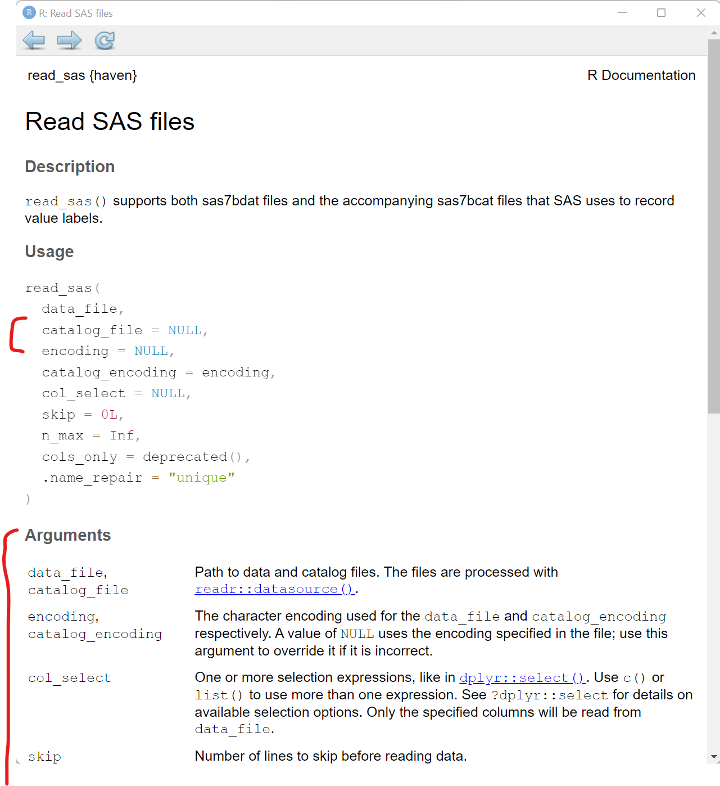

# Import the CSV file
library(readr)
mydata <- read_csv("mydata.csv")
# Import the EXCEL file
# Choose the "Data" TAB
library(readxl)
mydata <- read_excel("mydata.xlsx", sheet = "Data")
# Import a SPSS file
library(haven)
mydata <- read_sav("mydata.sav")
# Import a SAS file
library(haven)
mydata <- read_sas("mydata.sas7bdat", NULL)1.3.2: Data Wrangling
(Asynchronous-Online)
Session Objectives
- To read in data.
- To view the Data.
- To subset the data - select and filter.
- To create and modify variables.
- To get data summary and descriptive statistics
0. Prework - Before You Begin
Install Packages
Before you begin, please go ahead and install the following packages - these are all on CRAN, so you can install them using the RStudio Menu Tools/Install Packages interface:
-
readron CRAN -
readxlon CRAN -
havenon CRAN -
dplyron CRAN Hmiscpackagepsychpackagearsenalgtsummarygmodelssummarytools
See Module 1.3.1 on Installing Packages
1. To read in data.
Begin with a NEW RStudio Project
Let’s begin with a new RStudio Project.
- First click on the menu at top for File/New Project:

- Next choose either an “Existing Directory” or “New Directory” depending on whether you want to use a folder that already exists on your computer or you want to create a new folder.

- For now, let’s choose a “New Directory” and then select “New Project”

- When the next window opens, as an example, I’m creating a new folder called
myfirstRprojectfor my RStudio project under the parent directory,C:\MyGithub.

- So, if I look back on my computer in my file manager (I’m on a computer with Windows 11 operating system) - I can now see this new folder on my computer for
C:\MyGithub\myfirstRproject.

- Now let’s put some data into this folder. Feel free to move datasets of your own into this new RStudio project directory. But here are some test datasets you can download and place into this new directory on your computer - choose at least one to try out - right click on each link and use “Save As” to save the file on your computer.
mydata.csv- CSV (comma separated value) formatted datamydata.xlsx- EXCEL filemydata.sav- SPSS Datasetmydata.sas7bdat- SAS DatasetMydata_Codebook.pdf- Codebook Details on “mydata” dataset
- After putting these files into your new RStudio project folder, you should see something like this now in your RStudio Files Listing (bottom right window pane):
Importing Data
Now that you’ve got some data in your RStudio project folder, let’s look at options for importing these datasets into your RStudio computing session.
Click on File/Import Dataset - and then choose the file format you want.
Import a CSV file
What is a CSV file?
CSV stands for “comma separated value” format. This format is what you would think - each value for a different column (or variable) is separated by a column and each new row represents a new record in the dataset.
CSV is widely accepted as a “universal” standard as a data format for easy exchange between different software and databases.
- Wikipedia Page on CSV
- Library of Congress Page on CSV
- There is even a conference on CSV
Here is an example of importing the mydata.csv - CSV formatted data. Let’s use the From Text (readr) option.

Why should we use the “from text” option? Why do I not see a CSV option?
Technically the CSV format is TEXT. You can open a CSV file in a text editor and easily read it - even if you do not have proprietary software like Excel, Access, SPSS, SAS, etc. Here is a screen shot of what the “mydata.csv” file looks like in my text editor “Notepad” on my Windows 11 computer:
Notice that:
- The first row has text labels for the “variables” (columns) in the dataset - there are 14 column labels with each value separated by a
,comma. - The remaining rows are the “data” for the dataset.
- AFTER the 1st row of labels, there are 21 rows of data.
- Take a minute and notice there are some odd values, and odd patterns of missing data (two commas
,,together indicate that value is missing for that column (variable)). We’ll explore these issues further below.

Once the “File/Import Data/From Text (readr)” opens, click on “Browse” and choose the mydata.csv file. Assuming all goes well, this window will read the top of the datafile and show you a quick “Data Preview” to check that the import will work.
And on the bottom right, the “Code Preview” shows you the R code commands needed to import this dataset. You can then click on the little “clipboard” on the bottom right to copy this R code to your “clipboard”, (the R code option will be explained below).
OR You can also just click “Import” and the R code will be executed for you and the dataset brought into your R computing session (but this is NOT a good practice for reproducible research!).

But the better way is to save the R code commands to import the data so you will be able to reproduce all steps in your data analysis workflow using code as opposed to non-reproducible point-and-click steps.
Once you copied the R code above to your clipboard, go to “File/New File/R Script” to open a script programming window:

And then “paste” your R code into this window.
So as you can see importing the mydata.csv dataset, involves 2 steps:
- Loading the
readrpackage into your RStudio computing session, by runninglibrary(readr) - Running the
read_csv()function from thereadrpackage and then assigning<-this output into a new R data object calledmydata.

To import the dataset, select these 2 lines of code and then click “Run” to run the R code. And be sure to click “Save” to save your first R program - for example “importdata.R”.
After running these 2 lines of code, you should see something like this - the code messages in the bottom left “Console” window pane and a new R data object “mydata” in the top right “Global Environment” window pane.
Import an EXCEL file
Let’s try another format. While you will probably encounter CSV (comma separated value) data files often (since nearly all data collection platforms, databases and software will be able to export this simple non-proprietary format), many people natively open/read CSV files in the EXCEL software. So you will probably also encounter EXCEL (*.XLS or *.XLSX) formatted data files.
In addition to an EXCEL file using a Microsoft proprietary format, EXCEL files can have formatting (font sizes, colors, borders) and can have multiple TABs (or SHEETs). Here are some screen shots of the mydata.xlsx - EXCEL file file.
The first “Data” TAB:
The second “Codebook” TAB:

To import an EXCEL file into R, we will use the same process as above, but this time we will select “File/Import Dataset/From Excel”:
This process uses the read_excel() function from the readxl package.
With the read_excel() function, we can specify several options including:
- Which TAB do you want to import (for now we are only importing one data TAB at a time). We are selecting the “Data” TAB.
- I’m leaving all of the rest as their defaults which include:
- not changing the “Range”,
- leaving “Max Rows” blank,
- and leaving rows to “Skip” as 0, which can be useful if you receive files with a lot of “header” information at the top,,
- leaving the “NA” box blank - but you could put in a value like “99” if oyu want all 99’s treated as missing - but this is applied to the ENTIRE dataset. We will look at these issues for individual variables below.
- Also notice that the checkboxes are selected for “First Row as Names” (which is the usual convention) and “Open Data Viewer”, which creates the
View(mydata)in the “Code Preview” window to the right. You can skip this if you like.
So in the “Code Preview” window to the right, we have specified the name of the data file "mydata.xlsx" and the “Data” TAB using the option sheet = "Data". Remember to copy this code to the clipboard and save it in a *.R program script.
Here is the importdata.R program script we have so far for reading in the "mydata.csv" and "mydata.xlsx" data files. At the moment, the second time we “create” the mydata R data object we are overwriting the previous one.
Also notice I have added some comments which start with a # hashtag. Any text following a # will be ignored by R and not executed.
Import SPSS data
For data files from other “common” statistics software like SPSS, SAS and Stata, we can use the “File/Import Dataset/From SPSS (or From SAS or From Stata)”. All of these use read_xxx() functions from the haven package.

Here is the code generated to import a SPSS datafile:

Import SAS data
Importing a *.sas7bdat SAS datafile, is similar to SPSS - here is that code.
Notice that in addition to the datafile "mydata.sas7bdat", the read_sas() function also shows NULL. When reading in a SAS file, you can also add options for the catalog file and encoding specifics. You can read more on the HELP pages for the haven::read_sas() function.

Here is a quick summary of all of the data import codes shown above importdata.R:
Using
= equals for parameter options inside a function
Notice that we used sheet = "Data" inside the readxl::read_excel() function. The single = equals sign is used to assign a value to a parameter or option inside a function.
Exploring Built-in Datasets
If you are looking for other datasets to test out functions or just need some data to play around with, the base R packages and other R packages (like palmerpenguins) have data built-in to them. You can use these datasets.
We can take a look at what datasets are available using the data() function:
# take a look at the datasets available in the
# "datasets" base R package
data()This will open a viewer window (top left) - also notive that if you search for HELP on the pressure dataset, you get a description of the dataset and the original source and citation. Notice in the HELP window, the word pressure is followed by curly brackets indicating that the pressure dataset is in the built-in R package {datasets}.

We can see the pressure dataset is indeed in the datasets package if we keep scrolling down in the viewer window - also notice the mtcars dataset which you will often find in R tutorials and coding examples.
Once you know where to look, you can then explore lots of these datasets. For example, we can take a look at the built-in pressure dataset, which includes 19 values showing the relationship between tempeature in degrees Celcius and pressure in mm (or mercury). To “see” this builtin data object, just type the name pressure to see (or print out) the object.
pressure temperature pressure
1 0 0.0002
2 20 0.0012
3 40 0.0060
4 60 0.0300
5 80 0.0900
6 100 0.2700
7 120 0.7500
8 140 1.8500
9 160 4.2000
10 180 8.8000
11 200 17.3000
12 220 32.1000
13 240 57.0000
14 260 96.0000
15 280 157.0000
16 300 247.0000
17 320 376.0000
18 340 558.0000
19 360 806.0000Normally most datasets are much larger than this little dataset - I would not advise trying to view most datasets by printing them to the “Console” window pane. Instead you can either click on the object in your “Global Environment” to view it - or you can run the View() function to open the viewer window.
You can “load” the built-in pressure dataset using the data(pressure) function to load the pressure dataset to load into your “Global Environment”, which loads the dataset into your R session.
If we click on the little “Table icon” all the way to the right of the pressure dataset in the “Global Environment” window - or run View(pressure) - we can open the dataset in the Viewer window:

Explore Datasets in R Packages
I encourage you to use the data(package = "xxx") function to see what, if any, datasets may be built-in to the various packages you may install and load during your R computing sessions.
If you are interested in seeing other datasets in other R packages, go ahead and install the palmerpenguins package and take a look at the penguins dataset included:
# look at datasets included with the
# palmerpenguins dataset
data(package = "palmerpenguins")You can learn more about the penguins dataset, by opening up the HELP page for the dataset. You can also load the palmerpenguins package and then load the penguins dataset using this code.
help(penguins, package = "palmerpenguins")
library(palmerpenguins)
data(penguins)And clicking the the little data table icon after loading the penguins dataset into the “Global Environment”, you can see the dataset in the viewer window.

2. To view The Data.
Look at small data in Console
Let’s work with the mydata dataset that we imported above using the readr::read_csv() function.
# import the mydata.csv dataset
mydata <- readr::read_csv("mydata.csv")This is not a very large dataset - mydata has 21 rows (or observations) and 14 variables (or columns). So, we could view the whole thing by printing it to the “Console” window.
You’ll notice that depending on the size of your current “Console” window, font size, zoom settings and more, what you see may vary. Since we read this dataset in using the readr package, the data object is now a “tibble” dataframe which only shows the columns and rows that will reasonably show up in your “Console” window.
And the output below also lists what kind of column each variable is. For example,
-
Ageis a<dbl>indicating it is a numeric variable saved using double-precision, whereas -
GenderSTRis<chr>indicating this is a text or character (or “string”) type variable.
# print the dataset into the Console
mydata# A tibble: 21 × 14
SubjectID Age WeightPRE WeightPOST Height SES GenderSTR GenderCoded q1
<dbl> <dbl> <dbl> <dbl> <dbl> <dbl> <chr> <dbl> <dbl>
1 1 45 68 145 5.6 9 m 1 4
2 2 50 167 166 5.4 2 f 2 3
3 3 35 143 135 5.6 2 <NA> NA 3
4 4 44 216 201 5.6 2 m 1 4
5 5 32 243 223 6 2 m 1 5
6 6 48 165 145 5.2 2 f 2 2
7 8 50 60 132 3.3 2 m 1 3
8 9 51 110 108 5.1 3 f 2 1
9 12 46 167 158 5.5 2 F 2 1
10 14 35 190 200 5.8 1 Male 1 4
# ℹ 11 more rows
# ℹ 5 more variables: q2 <dbl>, q3 <dbl>, q4 <dbl>, q5 <dbl>, q6 <dbl>Look the “structure” of the dataset
You can also view the different kinds of variables in the dataset using the str() or “structure” function - which lists the type of variable, the number of elements in each column [1:21] indicates each column has 21 elements (or 21 rows) and the other values are a quick “peek” at the data inside the dataset. For example, the first 3 people in this dataset are ages 45, 50 and 35.
str(mydata)spc_tbl_ [21 × 14] (S3: spec_tbl_df/tbl_df/tbl/data.frame)
$ SubjectID : num [1:21] 1 2 3 4 5 6 8 9 12 14 ...
$ Age : num [1:21] 45 50 35 44 32 48 50 51 46 35 ...
$ WeightPRE : num [1:21] 68 167 143 216 243 165 60 110 167 190 ...
$ WeightPOST : num [1:21] 145 166 135 201 223 145 132 108 158 200 ...
$ Height : num [1:21] 5.6 5.4 5.6 5.6 6 5.2 3.3 5.1 5.5 5.8 ...
$ SES : num [1:21] 9 2 2 2 2 2 2 3 2 1 ...
$ GenderSTR : chr [1:21] "m" "f" NA "m" ...
$ GenderCoded: num [1:21] 1 2 NA 1 1 2 1 2 2 1 ...
$ q1 : num [1:21] 4 3 3 4 5 2 3 1 1 4 ...
$ q2 : num [1:21] NA 4 4 2 3 5 NA 4 1 44 ...
$ q3 : num [1:21] NA 1 2 2 5 5 4 1 5 1 ...
$ q4 : num [1:21] 4 40 3 1 2 1 3 3 5 1 ...
$ q5 : num [1:21] 4 3 5 1 4 4 9 1 1 4 ...
$ q6 : num [1:21] 5 2 2 9 1 5 2 4 2 5 ...
- attr(*, "spec")=
.. cols(
.. SubjectID = col_double(),
.. Age = col_double(),
.. WeightPRE = col_double(),
.. WeightPOST = col_double(),
.. Height = col_double(),
.. SES = col_double(),
.. GenderSTR = col_character(),
.. GenderCoded = col_double(),
.. q1 = col_double(),
.. q2 = col_double(),
.. q3 = col_double(),
.. q4 = col_double(),
.. q5 = col_double(),
.. q6 = col_double()
.. )
- attr(*, "problems")=<externalptr> You can also interactively View the data by clicking on the data icon and you can also click the little “table” icon to the far right next to the dataset in the “Global Environment”to open the data viewer window on the left.
You can also click on the little blue circle to the left of the mydata dataset to change the arrow from facing right to facing down to see the “structure” of the data in the “Global Environment”.
3. To subset the data - select and filter.
Using base R packages and functions
View parts of the dataset
Now let’s “explore” the data by viewing sections of it.
Using base R commands, we can use functions like head() and tail() with eash showing either the top or bottom 6 rows of the dataset. We can add a number to the function call to see more or less rows if we wish.
# look at top 6 rows of data
head(mydata)# A tibble: 6 × 14
SubjectID Age WeightPRE WeightPOST Height SES GenderSTR GenderCoded q1
<dbl> <dbl> <dbl> <dbl> <dbl> <dbl> <chr> <dbl> <dbl>
1 1 45 68 145 5.6 9 m 1 4
2 2 50 167 166 5.4 2 f 2 3
3 3 35 143 135 5.6 2 <NA> NA 3
4 4 44 216 201 5.6 2 m 1 4
5 5 32 243 223 6 2 m 1 5
6 6 48 165 145 5.2 2 f 2 2
# ℹ 5 more variables: q2 <dbl>, q3 <dbl>, q4 <dbl>, q5 <dbl>, q6 <dbl># look at the bottom 10 rows of data
tail(mydata, n=10)# A tibble: 10 × 14
SubjectID Age WeightPRE WeightPOST Height SES GenderSTR GenderCoded q1
<dbl> <dbl> <dbl> <dbl> <dbl> <dbl> <chr> <dbl> <dbl>
1 19 40 200 195 6.1 1 f 2 1
2 21 99 180 185 5.9 3 f 2 2
3 22 52 240 220 6.5 2 m 1 2
4 23 24 250 240 6.4 2 M 1 5
5 24 35 175 174 5.8 2 F 2 5
6 27 51 220 221 6.3 2 m 1 4
7 28 43 230 98 2.6 2 m 1 11
8 30 36 190 180 5.7 1 female 2 5
9 32 44 260 109 6.4 3 male 1 1
10 NA NA NA NA NA NA <NA> NA NA
# ℹ 5 more variables: q2 <dbl>, q3 <dbl>, q4 <dbl>, q5 <dbl>, q6 <dbl>
What are these wierd
NAs?
The NA letters that show up is how R stores missing data. If the dataset you import has a blank cell (for either numeric or character type data), then R interprets that as “not available” which is indicated by NA. NA is a reserved word in R specifically set aside for handling missing values.
You can learn more about NA by running:
help(NA, package = "base")You can also view different parts of the data by using square brackets [] to select specific rows and columns using [row, column] index indicators.
# Select the values in rows 1-4
# and in columns 1-3
mydata[1:4, 1:3]# A tibble: 4 × 3
SubjectID Age WeightPRE
<dbl> <dbl> <dbl>
1 1 45 68
2 2 50 167
3 3 35 143
4 4 44 216To select all of a given row or column just leave that index blank.
# show all of rows 1-2
mydata[1:2, ]# A tibble: 2 × 14
SubjectID Age WeightPRE WeightPOST Height SES GenderSTR GenderCoded q1
<dbl> <dbl> <dbl> <dbl> <dbl> <dbl> <chr> <dbl> <dbl>
1 1 45 68 145 5.6 9 m 1 4
2 2 50 167 166 5.4 2 f 2 3
# ℹ 5 more variables: q2 <dbl>, q3 <dbl>, q4 <dbl>, q5 <dbl>, q6 <dbl># show all of columns 3-4
mydata[ ,3:4]# A tibble: 21 × 2
WeightPRE WeightPOST
<dbl> <dbl>
1 68 145
2 167 166
3 143 135
4 216 201
5 243 223
6 165 145
7 60 132
8 110 108
9 167 158
10 190 200
# ℹ 11 more rowsView variables in dataset by name
We can also select columns from a dataset using the variable (or column) name. To see the names of all of the variables in a dataset, use the names() function.
# list variable names in mydata
names(mydata) [1] "SubjectID" "Age" "WeightPRE" "WeightPOST" "Height"
[6] "SES" "GenderSTR" "GenderCoded" "q1" "q2"
[11] "q3" "q4" "q5" "q6" We can use the $ “dollar sign” operator to “select” named variables out of a dataset. Let’s look at all of the ages in mydata.
# look at all of the ages
# of the 21 people in mydata
mydata$Age [1] 45 50 35 44 32 48 50 51 46 35 36 40 99 52 24 35 51 43 36 44 NAWe can also use these variable names with the [] brackets in base R syntax. And we use the c() combine function to help us put a list together. Let’s look at the 2 weight columns in the dataset. Put the variable names inside "" double quotes.
# show all rows for
# the 2 weight variables in mydata
mydata[ , c("WeightPRE", "WeightPOST")]# A tibble: 21 × 2
WeightPRE WeightPOST
<dbl> <dbl>
1 68 145
2 167 166
3 143 135
4 216 201
5 243 223
6 165 145
7 60 132
8 110 108
9 167 158
10 190 200
# ℹ 11 more rowsUsing dplyr functions
Using tidyverse packages and functions
As you can see while base R is very powerful on it’s own, the syntax is less than intuitive. There are a whole suite of R packages that are designed to work together and use a different syntax that improves programming workflow and readability.
Learn more about the suite of tidyverse packages. You’ve already used two of these, readr and haven are both part of tidyverse for importing datasets.
Another one of these tidyverse packages, dplyr is a very good package for “data wrangling”.
Pick columns using dplyr::select()
Instead of using the base R $ selector, the dplyr package has a select() function where you simply choose variables using their name. Let’s look at Height and q1 from the mydata dataset.
Using package::function() syntax
It is good coding practice, especially when loading several packages at once into your computing session, the make sure you are calling the exact function you want from a specific package. So, I’m using the syntax of package::function() to help keep track of which package and which function is being used below.
Workflow using the pipe %>% operator
Another improvement of the tidyverse approach of R programming is to use the pipe %>% operator. Basically what this syntax does is take the results from “A” and pipe it into –> the next “B” function, e.g. A %>% B so we can begin to “daisy-chain” a sequence of programming steps together into a logical workflow and is easy to “read” and follow.
Here is a working exmaple to show the same variable selection process using the dplyr::select() function. The code below takes the mydata dataset and pipes %>% it into the select() function. We were also able to drop using the c() function here.
# A tibble: 21 × 2
Height q1
<dbl> <dbl>
1 5.6 4
2 5.4 3
3 5.6 3
4 5.6 4
5 6 5
6 5.2 2
7 3.3 3
8 5.1 1
9 5.5 1
10 5.8 4
# ℹ 11 more rowsWe could even add the base R head() function here. If we put each code step on a separate line, you can now see that we are [1] taking the mydata dataset “and then” [2] selecting 2 variables “and then” [3] looking at the top 6 rows of the dataset.
# select Height and q1 from mydata
# and show only the top 6 rows
mydata %>%
dplyr::select(Height, q1) %>%
head()# A tibble: 6 × 2
Height q1
<dbl> <dbl>
1 5.6 4
2 5.4 3
3 5.6 3
4 5.6 4
5 6 5
6 5.2 2
TL;DR If
%>% is a pipe, then what is |>??
The %>% pipe operator is implemented within tidyverse from the magrittr package which is used by the tidyverse packages which started being used quite extensively by R programmers over the last decade.
However, the rest of the R development community which is much larger than just those who use the tidyverse suite, also recently added a new base R pipe operator |> (since R version 4.1.0).
Learn more in this tidyverse blog post from 2023
So, you do have the option to also use the base R |> pipe operator.
# select Height and q1 from mydata
# and show only the top 6 rows
mydata |>
dplyr::select(Height, q1) |>
head()# A tibble: 6 × 2
Height q1
<dbl> <dbl>
1 5.6 4
2 5.4 3
3 5.6 3
4 5.6 4
5 6 5
6 5.2 2For now, we will stay with the %>% operator for consistency. But be aware that you will see both approaches on the Internet when “Googling” for answers.
Pick rows using dplyr::filter()
In addition to selecting columns or variables from your dataset, you can also pull out a subset of your data by “filtering” out only the rows you want.
For example, suppose we only want to look at the Age, WeightPRE for the Females in the dataset indicates by GenderCoded equal to 2.
For reference, take a look at the mydata codebook - and here is a screenshot as well:
Notice that:
- I changed the order of the columns - this is OK
- and to filter out and KEEP only the rows for females, I typed
GenderCoded == 2using two equal signs==. R uses two==equal signs to perform a logicial operation to ask does the variableGenderCodedequal the value of 2, with either aTRUEorFALSEresult. Only the rows with aTRUEresult are shown.
Be careful not to mix up
= and ==
Odds are you will get errors at some point due to typos or other issues, but a common error is to use a single = equals sign when trying to perform a logic operation. Remember to use 2 equals signs == if you are trying to perform a TRUE/FALSE operation.
# select columns from mydata
# and then only show rows for females
mydata %>%
select(GenderCoded, Age, WeightPRE) %>%
filter(GenderCoded == 2)# A tibble: 8 × 3
GenderCoded Age WeightPRE
<dbl> <dbl> <dbl>
1 2 50 167
2 2 48 165
3 2 51 110
4 2 46 167
5 2 40 200
6 2 99 180
7 2 35 175
8 2 36 190Here is an example of the error you will get if you use a single = sign instead of == two.
sort/Arrange rows using dplyr::arrange()
Here is another helpful function from dplyr. Suppose we want to find the 5 oldest people in mydata and show their IDs.
Let’s use the dplyr::arrange() function which will sort our data based on the variable we specify in increasing order (lowest to highest) by default. And we will add the desc() function to sort decreasing from largest to smallest.
Learn more by running help(arrange, package = "dplyr")
Note: There was someone with age 99 in this made-up dataset.
# take mydata
# select SubjectID and Age
# sort descending by Age
# show the top 5 IDs and Ages
mydata %>%
select(SubjectID, Age) %>%
arrange(desc(Age)) %>%
head(n=5)# A tibble: 5 × 2
SubjectID Age
<dbl> <dbl>
1 21 99
2 22 52
3 9 51
4 27 51
5 2 504. To create and modify variables.
To create and add new variables to the dataset, we can use either a base R approach or the mutate() function from the dplyr package. Let’s take a look at both approaches. In the mydata dataset, we have Height in decimal feet and we have WeightPRE and WeightPOST in pounds.
So, let’s compute BMI (bodt mass index) as follows from Height (in inches) and Weight (in pounds):
\[BMI = \left(\frac{weight_{(lbs)}}{(height_{(inches)})^2}\right) * 703\]
Create New Variable - Base R Approach
Create a new variable using the $ selector operator. Then write out the mathematical equation. I also had to multiple the Height in decimal feet * 12 to get inches.
# Compute BMI forthe PRE Weight
mydata$bmiPRE <-
(mydata$WeightPRE * 703) / (mydata$Height * 12)^2
# look at result
mydata$bmiPRE [1] 10.58585 27.95901 22.26142 33.62564 32.95312 29.78997 26.89777
[8] 20.64644 26.95156 27.57341 29.21039 26.23996 25.24418 27.73176
[15] 29.79702 25.39656 27.06041 166.10166 28.54938 30.98891 NALook at the “Global Environment” or run the str() function to see if a new variable was added to mydata - which should now have 15 variables instead of only 14.
You can also list the variable names in the updated dataset.
# look at updated data structure
str(mydata)spc_tbl_ [21 × 15] (S3: spec_tbl_df/tbl_df/tbl/data.frame)
$ SubjectID : num [1:21] 1 2 3 4 5 6 8 9 12 14 ...
$ Age : num [1:21] 45 50 35 44 32 48 50 51 46 35 ...
$ WeightPRE : num [1:21] 68 167 143 216 243 165 60 110 167 190 ...
$ WeightPOST : num [1:21] 145 166 135 201 223 145 132 108 158 200 ...
$ Height : num [1:21] 5.6 5.4 5.6 5.6 6 5.2 3.3 5.1 5.5 5.8 ...
$ SES : num [1:21] 9 2 2 2 2 2 2 3 2 1 ...
$ GenderSTR : chr [1:21] "m" "f" NA "m" ...
$ GenderCoded: num [1:21] 1 2 NA 1 1 2 1 2 2 1 ...
$ q1 : num [1:21] 4 3 3 4 5 2 3 1 1 4 ...
$ q2 : num [1:21] NA 4 4 2 3 5 NA 4 1 44 ...
$ q3 : num [1:21] NA 1 2 2 5 5 4 1 5 1 ...
$ q4 : num [1:21] 4 40 3 1 2 1 3 3 5 1 ...
$ q5 : num [1:21] 4 3 5 1 4 4 9 1 1 4 ...
$ q6 : num [1:21] 5 2 2 9 1 5 2 4 2 5 ...
$ bmiPRE : num [1:21] 10.6 28 22.3 33.6 33 ...
- attr(*, "spec")=
.. cols(
.. SubjectID = col_double(),
.. Age = col_double(),
.. WeightPRE = col_double(),
.. WeightPOST = col_double(),
.. Height = col_double(),
.. SES = col_double(),
.. GenderSTR = col_character(),
.. GenderCoded = col_double(),
.. q1 = col_double(),
.. q2 = col_double(),
.. q3 = col_double(),
.. q4 = col_double(),
.. q5 = col_double(),
.. q6 = col_double()
.. )
- attr(*, "problems")=<externalptr> # list the variable names in the
# updated dataset
names(mydata) [1] "SubjectID" "Age" "WeightPRE" "WeightPOST" "Height"
[6] "SES" "GenderSTR" "GenderCoded" "q1" "q2"
[11] "q3" "q4" "q5" "q6" "bmiPRE" Create New Variable - dplyr::mutate() Approach
In the dplyr package, you can create or modify variables using the mutate() function.
# Compute BMI forthe POST Weight
# use the dplyr::mutate() function
mydata <- mydata %>%
mutate(
bmiPOST = (WeightPOST * 703) / (Height * 12)^2
)
# check updates
str(mydata)tibble [21 × 16] (S3: tbl_df/tbl/data.frame)
$ SubjectID : num [1:21] 1 2 3 4 5 6 8 9 12 14 ...
$ Age : num [1:21] 45 50 35 44 32 48 50 51 46 35 ...
$ WeightPRE : num [1:21] 68 167 143 216 243 165 60 110 167 190 ...
$ WeightPOST : num [1:21] 145 166 135 201 223 145 132 108 158 200 ...
$ Height : num [1:21] 5.6 5.4 5.6 5.6 6 5.2 3.3 5.1 5.5 5.8 ...
$ SES : num [1:21] 9 2 2 2 2 2 2 3 2 1 ...
$ GenderSTR : chr [1:21] "m" "f" NA "m" ...
$ GenderCoded: num [1:21] 1 2 NA 1 1 2 1 2 2 1 ...
$ q1 : num [1:21] 4 3 3 4 5 2 3 1 1 4 ...
$ q2 : num [1:21] NA 4 4 2 3 5 NA 4 1 44 ...
$ q3 : num [1:21] NA 1 2 2 5 5 4 1 5 1 ...
$ q4 : num [1:21] 4 40 3 1 2 1 3 3 5 1 ...
$ q5 : num [1:21] 4 3 5 1 4 4 9 1 1 4 ...
$ q6 : num [1:21] 5 2 2 9 1 5 2 4 2 5 ...
$ bmiPRE : num [1:21] 10.6 28 22.3 33.6 33 ...
$ bmiPOST : num [1:21] 22.6 27.8 21 31.3 30.2 ...names(mydata) [1] "SubjectID" "Age" "WeightPRE" "WeightPOST" "Height"
[6] "SES" "GenderSTR" "GenderCoded" "q1" "q2"
[11] "q3" "q4" "q5" "q6" "bmiPRE"
[16] "bmiPOST" Create New Variable - add labels to codes
As you probably noticed in the views of the mydata dataset above, there was originally a variable where people were allowed to enter their gender using free text (the GenderSTR variable). So, there were entries like “f”, “F”, “female”, “male”, “Male” and other variations. So another variable GenderCoded was included where 1=male and 2=female, but when we look at mydata$GenderCoded all we see are 1’s and 2’s and NAs.
mydata$GenderCoded [1] 1 2 NA 1 1 2 1 2 2 1 1 2 2 1 1 2 1 1 2 1 NAIt would be nice if we could add some labels. One way to do this is to convert GenderCoded from being a simple “numeric” variable to a new class called a “factor” which included both numeric values and text labels.
Here is the base R approach to create a new factor type variable. Learn more by looking at the help page for factor(), run help(factor, package = "base").
# create a new factor with labels
mydata$GenderCoded.f <-
factor(mydata$GenderCoded,
levels = c(1, 2),
labels = c("Male", "Female"))
# look at new variable
mydata$GenderCoded.f [1] Male Female <NA> Male Male Female Male Female Female Male
[11] Male Female Female Male Male Female Male Male Female Male
[21] <NA>
Levels: Male FemaleWe can check the type each variable using the class() function.
Another quick way to see these class type differences is to use the table() function to get the frequencies of each distinct value. I’m also adding the useNA = "ifany" option to also get a count of any missing values. Learn more by running help(table, package = "base").
# table of frequencies of GenderCoded - numeric class
table(mydata$GenderCoded, useNA = "ifany")
1 2 <NA>
11 8 2 # table of GenderCoded.f - factor class
table(mydata$GenderCoded.f, useNA = "ifany")
Male Female <NA>
11 8 2 5. To get data summary and descriptive statistics.
Getting summary statistics
summary() function
One of the best functions that is part of base R is the summary() function. Let’s see what this gives us for the mydata dataset.
As you can see for all of the numeric class variables, the summary() function gives us the min, max, median, mean, 1st quartileand 3rd quartile and a count and of the the number of missing NAs. So you can see the mean Age is 44.8 and the median Age is 44.0.
For the character variable GenderSTR all we know is it has a length of 21.
But for the factor type variable GenderCoded.f we get the number of Males, Females and NAs.
summary(mydata) SubjectID Age WeightPRE WeightPOST
Min. : 1.00 Min. :24.00 Min. : 60.0 Min. : 98.0
1st Qu.: 5.75 1st Qu.:35.75 1st Qu.:166.5 1st Qu.:142.5
Median :15.00 Median :44.00 Median :190.0 Median :177.0
Mean :15.30 Mean :44.80 Mean :185.2 Mean :172.2
3rd Qu.:23.25 3rd Qu.:50.00 3rd Qu.:230.0 3rd Qu.:203.2
Max. :32.00 Max. :99.00 Max. :260.0 Max. :240.0
NA's :1 NA's :1 NA's :1 NA's :1
Height SES GenderSTR GenderCoded
Min. :2.600 Min. :1.0 Length:21 Min. :1.000
1st Qu.:5.475 1st Qu.:2.0 Class :character 1st Qu.:1.000
Median :5.750 Median :2.0 Mode :character Median :1.000
Mean :5.550 Mean :2.3 Mean :1.421
3rd Qu.:6.125 3rd Qu.:2.0 3rd Qu.:2.000
Max. :6.500 Max. :9.0 Max. :2.000
NA's :1 NA's :1 NA's :2
q1 q2 q3 q4
Min. : 1.00 Min. : 1.000 Min. :1.00 Min. : 1.000
1st Qu.: 1.75 1st Qu.: 2.000 1st Qu.:1.00 1st Qu.: 2.000
Median : 3.00 Median : 4.000 Median :3.00 Median : 3.000
Mean : 3.35 Mean : 5.526 Mean :3.15 Mean : 5.062
3rd Qu.: 4.25 3rd Qu.: 4.500 3rd Qu.:4.25 3rd Qu.: 4.000
Max. :11.00 Max. :44.000 Max. :9.00 Max. :40.000
NA's :1 NA's :2 NA's :1 NA's :5
q5 q6 bmiPRE bmiPOST
Min. : 1.000 Min. :1.000 Min. : 10.59 Min. :12.99
1st Qu.: 2.000 1st Qu.:2.000 1st Qu.: 26.03 1st Qu.:25.38
Median : 4.000 Median :4.000 Median : 27.65 Median :26.42
Mean : 9.176 Mean :3.706 Mean : 33.78 Mean :29.43
3rd Qu.: 5.000 3rd Qu.:5.000 3rd Qu.: 29.79 3rd Qu.:28.71
Max. :99.000 Max. :9.000 Max. :166.10 Max. :70.77
NA's :4 NA's :4 NA's :1 NA's :1
GenderCoded.f
Male :11
Female: 8
NA's : 2
So, the summary() function is helpful, but you’ll notice we do not get the standard deviation. For some reason that was left out of the original summary() statistics function.
There are a few other descriptive statistics functions that can be useful. There is a describe() function in both the Hmisc package and the psych packages.
Hmisc::describe() function
Let’s look at Hmisc::describe() for a couple of the variables.
You’ll notice that this still doesn’t give us the standard deviation, but we get the min,max, mean, median, as well as the .05 5th percentile and others, and the output includes a summary ofthe frequency of the distinct values.
.
3 Variables 21 Observations
--------------------------------------------------------------------------------
Age
n missing distinct Info Mean pMedian Gmd .05
20 1 14 0.994 44.8 43 13.81 31.60
.10 .25 .50 .75 .90 .95
34.70 35.75 44.00 50.00 51.10 54.35
Value 24 32 35 36 40 43 44 45 46 48 50 51 52
Frequency 1 1 3 2 1 1 2 1 1 1 2 2 1
Proportion 0.05 0.05 0.15 0.10 0.05 0.05 0.10 0.05 0.05 0.05 0.10 0.10 0.05
Value 99
Frequency 1
Proportion 0.05
For the frequency table, variable is rounded to the nearest 0
--------------------------------------------------------------------------------
GenderCoded.f
n missing distinct
19 2 2
Value Male Female
Frequency 11 8
Proportion 0.579 0.421
--------------------------------------------------------------------------------
bmiPRE
n missing distinct Info Mean pMedian Gmd .05
20 1 20 1 33.78 27.73 18.52 20.14
.10 .25 .50 .75 .90 .95
22.10 26.03 27.65 29.79 33.02 40.25
10.5858489229025 (1, 0.05), 20.6464394036482 (1, 0.05), 22.2614175878685 (1,
0.05), 25.2441827061189 (1, 0.05), 25.3965599815035 (1, 0.05), 26.2399593896503
(1, 0.05), 26.8977655341292 (1, 0.05), 26.9515610651974 (1, 0.05),
27.0604126424232 (1, 0.05), 27.5734079799181 (1, 0.05), 27.7317554240631 (1,
0.05), 27.9590096784027 (1, 0.05), 28.5493827160494 (1, 0.05), 29.2103855937103
(1, 0.05), 29.7899716469428 (1, 0.05), 29.7970241970486 (1, 0.05),
30.9889051649305 (1, 0.05), 32.953125 (1, 0.05), 33.6256377551021 (1, 0.05),
166.101660092045 (1, 0.05)
For the frequency table, variable is rounded to the nearest 0
--------------------------------------------------------------------------------psych::describe() function
The psych::describe() function only works on numeric data. So, let’s look at Age and bmiPRE. This function now gives us the standard deviation sd and even the mad which is the mean absolute deviation.
Base R specific statistics functions
There are many built-in functions in base R for computing specific statistics like mean(), sd() for standard deviation, median(), min(), max() and quantile() to get specific percentiles.
Let get some summary statistics for different variablesin mydata.
WAIT!? - why did I get NA? Since there is missing data in this dataset, we need to tell these R functions how to handle the missing data. We need to add na.rm=TRUE to remove the NAs and then compute the min() and max() for the non-missing values.
If we want, we could get the non-parametric statistics of median, 25th and 75th percentiles for the interquartile range.Let’s get these statistics for bmiPRE.
dplyr::summarize() function
The dplyr package also has a summarize() function you can use to get specific statistics of your choosing. For example, let’s get the mean() and sd() for Age.
# A tibble: 1 × 2
mean_age sd_age
<dbl> <dbl>
1 44.8 14.9We can do this same code again but add the dplyr::group_by() function to add a grouping variable to get the statistics by.
Let’s get the summary stats (mean and sd) for Age by GenderCoded.f.
Make summary tables
Creating nicely formatted summary tables is an active area of development in the R community. So, I’m sure there are new functions and packages that I may not have shown here. But here are a few packages I use often for making tables of summary statistics.
arsenal package for tables
The arsenal package is useful for making tables - especially with Rmarkdown - to be explained further in a later session Module 1.3.6. Learn more at tableby() vignette.
Here is a quick example of some summary statistics for Age, bmiPRE, and SES by GenderCoded.f using the tableby() function.
First let’s add labels for SES and create a factor variable.
| Male (N=11) | Female (N=8) | Total (N=19) | p value | |
|---|---|---|---|---|
| Age | 0.199 | |||
| Mean (SD) | 41.455 (8.768) | 50.625 (20.493) | 45.316 (15.089) | |
| Range | 24.000 - 52.000 | 35.000 - 99.000 | 24.000 - 99.000 | |
| bmiPRE | 0.370 | |||
| Mean (SD) | 40.230 (42.193) | 26.347 (2.785) | 34.384 (32.274) | |
| Range | 10.586 - 166.102 | 20.646 - 29.790 | 10.586 - 166.102 | |
| SES.f | 0.625 | |||
| N-Miss | 1 | 0 | 1 | |
| low income | 2 (20.0%) | 2 (25.0%) | 4 (22.2%) | |
| average income | 7 (70.0%) | 4 (50.0%) | 11 (61.1%) | |
| high income | 1 (10.0%) | 2 (25.0%) | 3 (16.7%) |
gtsummary package for tables
The gtsummary package is also useful for making tables. We can even use it to make nicely formatted tables in the “Viewer” window pane or in Rmarkdown. Learn more at tbl_summary() vignette.
Here is a quick example of some summary statistics for Age and bmiPRE by GenderCoded.f using the tbl_summary() function.
library(gtsummary)
mydata %>%
select(Age, bmiPRE, SES.f, GenderCoded.f) %>%
tbl_summary(by = GenderCoded.f)| Characteristic |
Male N = 111 |
Female N = 81 |
|---|---|---|
| Age | 44 (35, 50) | 47 (38, 51) |
| bmiPRE | 29 (27, 33) | 27 (25, 28) |
| SES.f | ||
| low income | 2 (20%) | 2 (25%) |
| average income | 7 (70%) | 4 (50%) |
| high income | 1 (10%) | 2 (25%) |
| Unknown | 1 | 0 |
| 1 Median (Q1, Q3); n (%) | ||
gmodels package for R-x-C tables
If we want to look at a “cross-table” similar to output from SPSS or SAS, the gmodels package has the CrossTable() function that creates text-based tables similar to these other statistics software packages.
Let’s get the frequencies and columns percentages for gender by SES. The first variable is the row variable, the second is the column variable.
library(gmodels)
CrossTable(mydata$GenderCoded.f, # row variable
mydata$SES.f, # column variable
prop.t = FALSE, # turn off percent of total
prop.r = FALSE, # turn off percent of row
prop.c = TRUE, # turn off percent of column
prop.chisq = FALSE, # turn off percent for chisq test
format = "SPSS" # format like SPSS
)
Cell Contents
|-------------------------|
| Count |
| Column Percent |
|-------------------------|
Total Observations in Table: 18
| mydata$SES.f
mydata$GenderCoded.f | low income | average income | high income | Row Total |
---------------------|----------------|----------------|----------------|----------------|
Male | 2 | 7 | 1 | 10 |
| 50.000% | 63.636% | 33.333% | |
---------------------|----------------|----------------|----------------|----------------|
Female | 2 | 4 | 2 | 8 |
| 50.000% | 36.364% | 66.667% | |
---------------------|----------------|----------------|----------------|----------------|
Column Total | 4 | 11 | 3 | 18 |
| 22.222% | 61.111% | 16.667% | |
---------------------|----------------|----------------|----------------|----------------|
References
Bolker, Gregory R. Warnes andBen, Thomas Lumley, Randall C Johnson, and Randall C. Johnson. 2022. Gmodels: Various r Programming Tools for Model Fitting. https://CRAN.R-project.org/package=gmodels.
Heinzen, Ethan, Jason Sinnwell, Elizabeth Atkinson, Tina Gunderson, and Gregory Dougherty. 2021. Arsenal: An Arsenal of r Functions for Large-Scale Statistical Summaries. https://github.com/mayoverse/arsenal.
Iannone, Richard. 2023. Fontawesome: Easily Work with Font Awesome Icons. https://github.com/rstudio/fontawesome.
R Core Team. 2024. R: A Language and Environment for Statistical Computing. Vienna, Austria: R Foundation for Statistical Computing. https://www.R-project.org/.
Sjoberg, Daniel D., Joseph Larmarange, Michael Curry, Jessica Lavery, Karissa Whiting, and Emily C. Zabor. 2024. Gtsummary: Presentation-Ready Data Summary and Analytic Result Tables. https://github.com/ddsjoberg/gtsummary.
Sjoberg, Daniel D., Karissa Whiting, Michael Curry, Jessica A. Lavery, and Joseph Larmarange. 2021. “Reproducible Summary Tables with the Gtsummary Package.” The R Journal 13: 570–80. https://doi.org/10.32614/RJ-2021-053.
Wickham, Hadley, Romain François, Lionel Henry, Kirill Müller, and Davis Vaughan. 2023. Dplyr: A Grammar of Data Manipulation. https://dplyr.tidyverse.org.